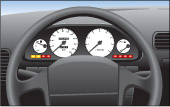
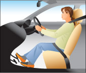
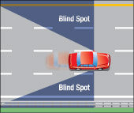
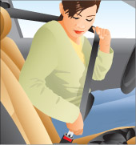
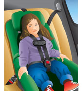
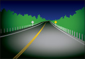
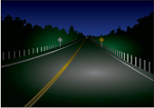

Before you drive, make sure you are comfortable with your physical, mental and emotional state, your vehicle and the conditions in which you will be driving. If you have doubts about any of them, don't drive.
Your ability to drive can change from one day to the next. Illness, fatigue, prescription and over-the-counter drugs, stress and your mental or emotional state can greatly diminish your ability to operate a motor vehicle. You should consider these factors before you begin driving, and you should not operate a motor vehicle when you are not fit to do so.
Be physically and mentally alert
You must be in good physical and mental condition to drive. Don't drive when you are sick or injured or when you have been drinking alcohol or taking any drug or medication that may reduce your ability to drive.
Don't drive when you are tired. You might fall asleep at the wheel, risking the lives of others on the road. Even if you don't fall asleep, fatigue affects your driving ability. Your thinking slows down and you miss seeing things. In an emergency, you may make the wrong decision or you may not make the right decision fast enough.
Don't drive when you are upset or angry. Strong emotions can reduce your ability to think and react quickly.
Know your vehicle

Get to know your vehicle before you drive it. There are many types of vehicles available today with many different characteristics, including fuel ignition systems, anti-lock brakes, four-wheel drive, and systems for traction control and stability control. Many newer vehicles offer technologies that assist drivers with steering, braking and/or accelerating to help you stay within your lane, avoid, or reduce collisions, and maintain safe following distances. Check the vehicle owner’s manual and other information available from the automaker to learn how these systems work, how to properly operate them, and to understand their limitations.
No matter what technologies are available in your vehicle, you must always pay attention to how they operate, be ready to take over control of the vehicle in the event of an unusual or unforeseen situation, and recognize that you remain responsible for all driving tasks.
For driving in difficult situations and conditions, see the section on dealing with particular situations.
Make sure you know where all the controls and instruments are and what they do. Check that all warning lights and gauges work. Watch for a warning light that stays on after you drive away; it could mean a serious problem with your vehicle.
Get to know the controls well enough to turn on wipers and washers, headlights, high beams, heater and defroster without having to look. Learning to use these essential controls without taking your eyes off the road is an important part of driving.
Get into position

Make sure you sit properly behind the wheel. You should sit high enough in the driver’s seat to see over the steering wheel and hood. You should be able to see the ground four metres in front of the vehicle. Use a firm cushion if needed.
Be sure that you are sitting straight upright in the seat with your elbows slightly bent. Adjust the seat so your feet reach the pedals easily. To check your position, try placing your feet flat on the floor under the brake pedal. If you can do this without stretching, you are seated properly. This keeps you in the proper, upright sitting position and gives you more stability when manoeuvring your vehicle.
If your vehicle has an adjustable headrest, you should make sure it is at the right height. The back of your head should be directly in front of the middle of the headrest to protect you in a collision.
Check that you have enough room in the front seat to drive properly and safely. Do not overcrowd your driving space with passengers or property.
Keep a clear view
Keep a clear view when driving. Do not put anything in your windows that will block your view. The windows of your vehicle must not be coated with any material that keeps you from seeing out in any direction. Neither should the windshield or front door windows be coated to keep someone from seeing inside the vehicle.
Find your blind spots

Check and adjust your mirrors and find your blind spots, the area on each side of your vehicle where you cannot see. You may not see people or cyclists when they are in these spots. On some vehicles the blind spot is so large that a vehicle could be there and you would not see it.
Adjust your mirrors so that there are as few blind spots as possible. Blind spots in most vehicles are to the back left and back right of the vehicle. To reduce the blind spots even more, position the interior mirror so that the centre of the mirror shows the centre of the rear window. You should be able to see directly behind the car when the interior mirror is properly adjusted. Position the left outside mirror by leaning towards the window and moving the mirror so that you can just see the rear of your car. Position the right outside mirror by leaning to the centre of the vehicle and moving the mirror so that you can again just see the rear of your car. Avoid overlap in what you can see in your mirrors. Because your side mirrors show only narrow angles of view, turning your head to do shoulder checks is the only way to make sure there is nothing in your blind spots.
You should know the blind spots on your own vehicle. You can learn where and how large they are by having someone walk around your car and watching the person in the mirrors.
Fasten your seatbelt

The proper use of a seatbelt can save your life. Even a small increase in the number of people who wear their seatbelts can save many lives.
You must use your seatbelt every time you travel in any vehicle equipped with seatbelts. All passengers must be buckled up in their own seatbelt, child car seat or booster seat.
Drivers who do not buckle up can be fined and will be given two demerit points. Drivers may also be fined and receive demerit points if they fail to ensure that all passengers under 16 years of age are properly buckled in a seatbelt, child car seat or booster seat. Level One (G1) drivers are only allowed to have his or her accompanying driver as a front-seat passenger, and must have a seatbelt for him or her. Novice drivers must have a seatbelt for every passenger. Drivers who do not ensure there is a working seatbelt for every passenger can lose their licence for at least 30 days.
Seatbelts should be worn snugly enough to keep you in your seat during a collision. Never put more than one person into a seatbelt; this can cause serious injury or even death in a collision. Wear the shoulder strap over your shoulder, never under your arm or behind your back. The lap belt should be worn low over the hips, not against the stomach.
Use your seatbelt always, even when you are sitting in a position with an active airbag. Airbags do not replace seatbelts. In a collision, your seatbelt will keep you in position so that the airbag can protect you.
Note: The safest place a passenger can travel is inside a vehicle, properly buckled in. It is not safe to travel outside a vehicle, such as in the back of a pickup truck, or in a trailer that is being towed. It is important for passengers to be secured within a vehicle to avoid being thrown from the vehicle during a collision.
For more information on seatbelts, visit the Ministry of Transportation website.
Child safety

To be safely protected in a vehicle, children must be properly secured in a child car seat, booster seat or seatbelt, depending on their height, weight and/or age. Research shows that a correctly used child car seat can reduce the likelihood of injury or death by 75 per cent.
As a driver, you are responsible for ensuring that all passengers under 16 years of age are properly buckled into a seatbelt, child car seat or booster seat. In Ontario, all drivers must use proper child car seats and booster seats when transporting young children.
Child car seats must meet Canadian Motor Vehicle Safety Standards. Buckles and straps must be fastened according to the manufacturer’s instructions. Newer vehicles that come equipped with a lower universal anchorage system (UAS) for securing a child car seat do not require the use of a seatbelt. A booster seat requires a lap and shoulder belt combination.
Infants who weigh less than 9 kilograms (20 lbs.) must be buckled into a rear-facing child car seat attached to the vehicle by a seatbelt or the UAS strap. A rear-facing child car seat is always best installed in the back seat. Never put a rear-facing child car seat in a seating position that has an active airbag. If the airbag inflates, it could seriously injure the child.
Toddlers 9 to 18 kilograms (20 to 40 lbs.) must be buckled into a child car seat attached to the vehicle by a seatbelt or a UAS strap; the seat’s tether strap must also be attached to the vehicle’s tether anchor. Children weighing more than 9 kilograms (20 lbs.) may remain in a rear-facing child car seat if it is designed to accommodate the child’s height and weight. Always follow the manufacturer’s instructions when installing a child car seat in your vehicle.
Booster seats provide 60 per cent more protection than seatbelts alone. These must be used by pre-school and primary-grade-aged children who have outgrown their forward-facing child car seat, are under the age of eight and weigh 18 kilograms (40 lbs.) or more but less than 36 kilograms (80 lbs.), and who are less than 145 centimetres (4 feet, 9 inches) tall. Booster seats raise a child so that the adult seatbelt works more effectively. The child’s head must be supported by the top of the booster, vehicle seat or headrest. You must use a booster seat with a lap/shoulder belt. The lap/shoulder belt should be worn so that the shoulder belt fits closely against the body, over the shoulder and across the centre of the chest and the lap belt sits firmly against the body and across the hips. Always follow the manufacturer’s instructions when installing a booster seat in your vehicle, and secure the booster seat with a seatbelt when a child is not travelling in it, or remove it from the vehicle.
If your vehicle has lap belts only, secure the child by the lap belt only. Never use a lap belt alone with a booster seat.
Children may begin wearing a seatbelt once they are able to wear it properly (a lap belt flat across the hips, shoulder belt across the centre of the chest and over the shoulder), and if any one of the following criteria is met:
- The child turns eight years old.
- The child weighs 36 kilograms (80 lbs.) or more.
- The child is 145 centimetres (4 feet 9 inches) tall or taller.
Do not place a child in a seating position in front of an air bag that is not turned off. The safest place for a child under age 13 is in the back seat.
Always secure loose objects in the vehicle with cargo nets or straps, or move them to the trunk to prevent them from injuring passengers in a collision or sudden stop.
Correct installation of a child car seat is important for ensuring a child’s safety. Your local public health unit is a good resource for finding out how to properly install a child car seat, or visit a local car seat clinic where certified technicians will help you install the seat.
For more information on child car seats visit the Ministry of Transportation website.
Note: Be careful if buying a used child car seat. Considerations should include ensuring the child car seat comes with complete manufacturer’s instructions and all necessary equipment; does not show signs of deterioration or damage; has never been in a collision; is not under recall; and has not exceeded its useful life expectancy as determined by the manufacturer.
Seatbelts and child car seats save lives
Seatbelts and child car seats reduce the risk of injury or death in collisions.
- Seatbelts help keep you inside and in control of the vehicle during a collision. People who are thrown from a vehicle have a much lower chance of surviving a collision.
- Seatbelts keep your head and body from hitting the inside of the vehicle or another person in the vehicle. When a vehicle hits a solid object, the people inside keep moving until something stops them. If you are not wearing your seatbelt, the steering wheel, windshield, dashboard or another person might be what stops you. This “human collision” often causes serious injury.
- Fire or sinking in water is rare in collisions. If it does happen, seatbelts help keep you conscious, giving you a chance to get out of the vehicle.
- In a sudden stop or swerve, no one can hold onto a child who is not in a seatbelt or child car seat. Infants or children who are not properly restrained can be thrown against the vehicle’s interior, collide with other people or be ejected.
- When using a child car seat, make sure that the seat is tightly secured by the vehicle seatbelt or by the universal anchorage system (UAS) strap, and for a forward-facing car seat, ensure the tether strap is also used. When installing the child car seat, press one knee into the seat and use your body weight to push it into the vehicle seat, then tighten the seatbelt or the car-seat UAS strap as much as possible. The installed child car seat should move no more than 2.5 centimetres (1 inch) where the seatbelt or UAS strap is routed through the child car seat.
- Use a locking clip where needed to ensure the seatbelt stays locked into position and will not loosen during a collision. Refer to your vehicle owner’s manual to see if you will need to use a locking clip.
- If a rear-facing child car seat does not rest at the proper 45-degree angle, you can prop up the base of the seat with a towel or a Styrofoam bar (“pool noodle”). Eighty per cent of the base of a forward-facing car seat should be firmly supported by the vehicle seat.
Turn on headlights at night and in poor conditions

Headlights enable you to see the roadway in front of your vehicle when visibility is poor, as well as making your vehicle visible to others. Your vehicle’s headlights must shine a white light that can be seen at least 150 metres in front and is strong enough to light up objects 110 metres away. You must also have red rear lights that can be seen 150 metres away and a white light lighting the rear licence plate when headlights are on. Headlights are equipped with the option to use a high beam to enhance vision further down the roadway and the use of a low beam when you are near other vehicles to minimize the glare of your headlights onto others. When you use high-beam headlights, remember to switch to low beams within 150 metres of an oncoming vehicle. Use your low beams when you are less than 60 metres behind another vehicle unless you are passing it. These rules apply to all roads, including divided ones.
Turning your headlights on activates other required light systems, such as your parking lights, tail lights and rear-licence plate light. Daytime running lights, which are often another mode of your headlights or can be a separate lighting system, are specifically designed to make your vehicle more visible during times of good light conditions, and are automatically activated when your vehicle is in operation and your headlight switch is turned to off.
When driving your vehicle, headlights are required to be turned on between one-half hour before sunset and one-half hour after sunrise, and any other time of poor light conditions, such as fog, snow or rain, which keeps you from clearly seeing people or vehicles less than 150 metres away. Please see the section on driving at night and in bad weather. Don't drive with only one headlight or with lights that are not aimed properly. Have your full lighting system checked regularly, keep them clean, and replace burned-out bulbs as soon as possible.
Parking lights are only for parking. In low light, use your headlights, not parking lights.

Your daytime running lights are not to be used as headlights during poor lighting conditions. They provide an inappropriate form of light that may cast glare onto others or deactivate other required light systems, such as tail lights. Daytime running lights are only to be used during good light conditions to enhance the visibility of your vehicle. If your vehicle is not equipped with daytime running lights, you should turn your headlights on to provide similar visual enhancement.
Driving with your vehicle’s full lighting system set to automatic is recommended, if your vehicle is equipped with this option. This will better ensure that the appropriate lighting system is being used. You should also monitor the activation and operation of your vehicle’s full lighting system at all times to ensure that appropriate lighting is being provided.
Summary
By the end of this section, you should know:
- The concepts of safe and responsible and defensive driving
- Factors that may affect your physical and mental readiness to drive
- How to familiarize yourself with your vehicle’s controls and how to set your seating position
- The legal requirements surrounding seatbelts, booster seats, and child car seats
- How and when to use your vehicle’s lighting system